In the previous project we succesfully raytraced diffuse materials, which reflect light uniformly in all directions. Here we extend this functionality to isotropic, rough, specular conductors. These materials only reflect light without refracting it, do so in an isotropic, mirror-like fashion, and in ways that are unique to conducting materials. This is accomplished using the microfacet model, which treats the material at the point of intersection with a ray as an infinitesimally small mirror with its own normal vector.
This means that, given an outgoing ray $\omega_o$ from the microfacet, we no longer sample the incoming ray $\omega_i$ with constant BRDF like in diffuse surfaces, but instead according to the function
$$f = \frac{F(\omega_i) * G(\omega_o, \omega_i) * D(h)}{4 * (n \cdot \omega_o) * (n \cdot \omega_i)}$$We will walk through each of the terms one by one. First, $D(h)$ computes the normal distribution function according to the half angle $h$ which bisects $\omega_i, \omega_o$:
$$D(h) = \frac{e^{\frac{- \tan ^2 \theta_h}{\alpha^2}}}{\pi \alpha^2 \cos ^4 \theta_h}$$ $$h = \frac{\omega_o + \omega_i}{\| \omega_o + \omega_i \|}$$Because a microfacet is modeled like an ideal mirror, it only reflects $\omega_i$ to $\omega_o$ if their half angle is exactly the microfacet normal (think of a billiard ball bouncing off a wall with a mirrored angle). To compute the likelihood of this, we "fix" the microfacet normal to equal the half-angle. This is more or less likely to be close to the already existing surface normal $n$ depending on the roughness $\alpha$, so we compute $D(h)$ as the Gaussian-like Beckmann distribution over the angle between the two normals $\theta_h$, parameterized by $\alpha$.
Whereas $D(h)$ adjusted the reflectance according to the angle of reflection, the Fresnel term $F(\omega_i)$ adjusts the reflectance according to the properties of the material. Specifically, dielectric-conductors reflect wavelengths of light according to the approximation
$$F = \frac{R_s + R_p}{2}$$ $$R_s = \frac{(\eta^2 + k^2) - 2\eta\cos\theta_i + \cos^2\theta_i}{(\eta^2 + k^2) + 2\eta\cos\theta_i + \cos^2\theta_i}$$ $$R_p = \frac{(\eta^2 + k^2)\cos^2\theta_i - 2\eta\cos\theta_i + 1}{(\eta^2 + k^2)\cos^2\theta_i + 2\eta\cos\theta_i + 1}$$where $\eta$ and $k$ are the wavelength-specific refraction index (specifying how much light is bent) and extinction coefficient (specifying how much light is absorbed), and $\theta_i$ is the angle of incidence of the incoming ray with the surface. Although technically we need to compute a unique $F$ for every conceivable wavelength, we approximate by only doing the calculation three times, one for each channel in an RGB image.
Finally, $G(\omega_o, \omega_i)$ is the shadow-masking term
$$G = \frac{1}{1 + \lambda_{\omega_o} + \lambda_{\omega_i}}$$We have described how the BRDF function changes for microfacet materials. However, the sampling distribution over $\omega_i$ must also change; we want to importance sample over the perfectly specular Beckmann distribution described above. This will ensure that each of the rays we trace conform to specular reflection, which allows sampling to converge more quickly. We begin by sampling the half angle $h$. This is done by sampling its spherical coordinates $\theta_h, \phi_h$ according to a distribution that approximates $D(h)$:
$$p_\theta\left(\theta_h\right)= \frac{2 \sin \theta_h}{\alpha^2 \cos ^3 \theta_h} e^{-\tan ^2 \theta_h / \alpha^2}$$ $$p_\phi\left(\phi_h\right)=\frac{1}{2 \pi}$$Using the inversion method, we can thus sample $h$ by sampling $r_1, r_2$ uniformly over $[0, 1]$:
$$\theta_h=\arctan \sqrt{-\alpha^2 \ln \left(1-r_1\right)}$$ $$\phi_h=2 \pi r_2$$From here, we can derive the incoming angle $\omega_i = 2h\frac{h \cdot \omega_o}{h \cdot h} - \omega_o$ by reflecting the outgoing angle across $h$. All that remains is to compute the probabilities of sampling $h$ And $\omega_i$ with regards to the solid angle:
$$p_\omega(h)=\frac{p_\theta\left(\theta_h\right) \cdot p_\phi\left(\phi_h\right)}{\sin \left(\theta_h\right)}$$ $$p_\omega\left(\omega_i\right)=\frac{p_\omega(h)}{4\left(\omega_i \cdot h\right)}$$Unless otherwise specified, all renders were performed at 480 x 360 resolution, with 256 samples per pixel, 4 samples per light, and up to 7 bounces.
Show a screenshot sequence of 4 images of sceneCBdragon_microfacet_au.daerendered with $\alpha$ set to 0.005, 0.05, 0.25 and 0.5. The other settings should be at least 128 samples per pixel and 1 samples per light. The number of bounces should be at least 5. Describe the differences between different images. Note that, to change the $\alpha$, just open the .dae file and search formicrofacet.
|
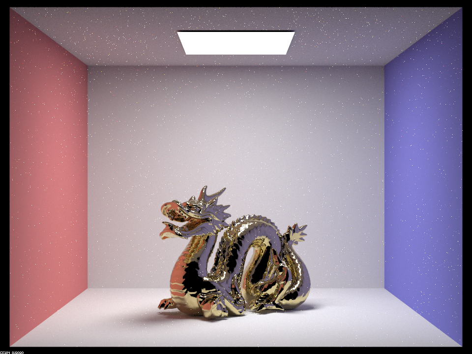
|
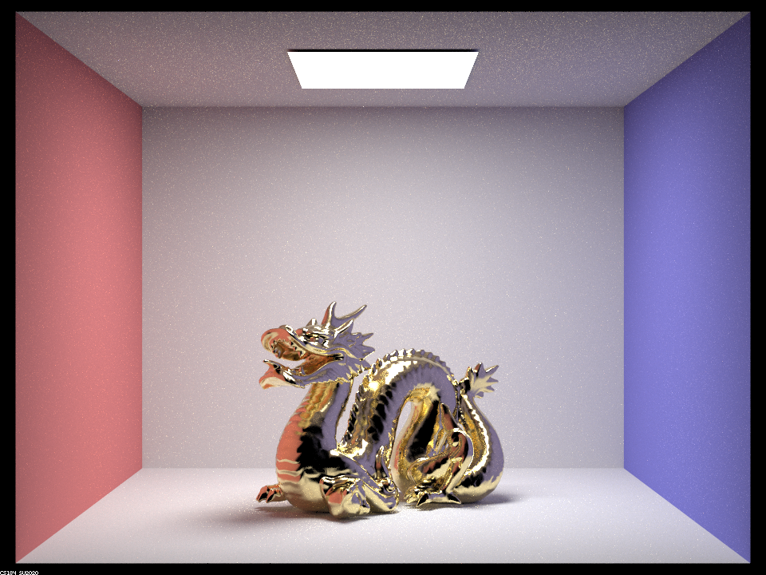
|
|
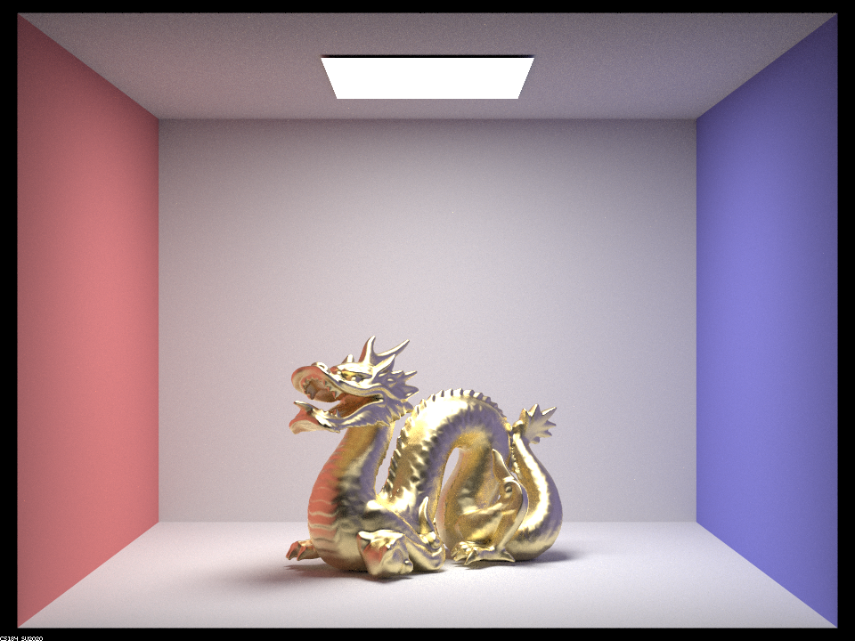
|
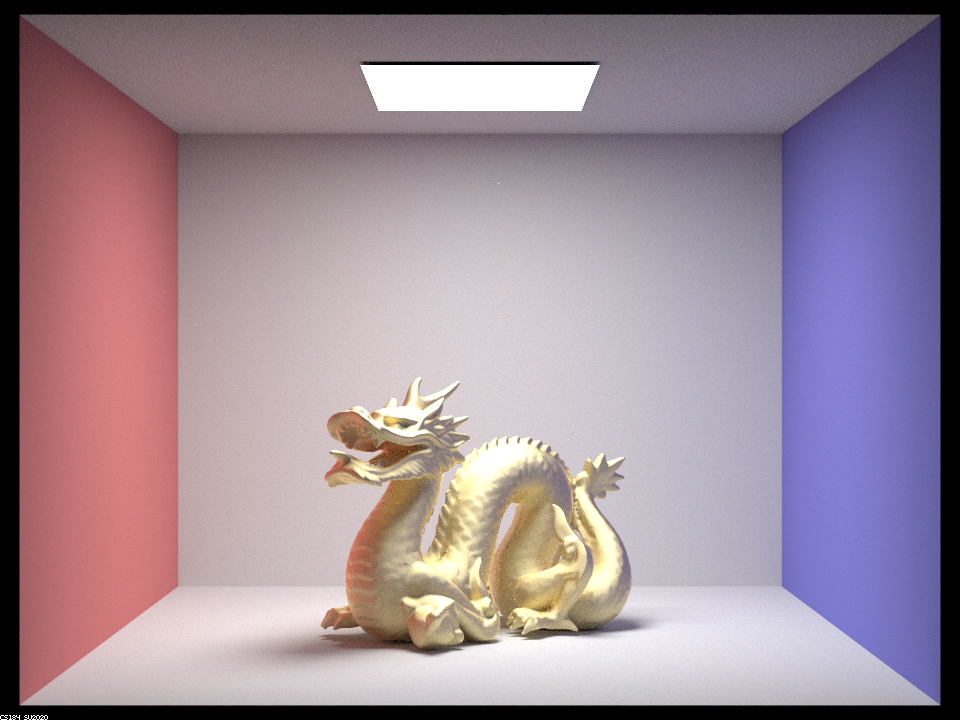
|
As expected, the material is more diffuse at higher values of $\alpha$ and more glossy at lower values of $\alpha$. This is due to the fact that $\alpha$ controls the distribution of microfacet normals; lower $\alpha$ results in low variance, such that the microfacets are close in angle to the surface itself (much like a smooth road) and thus reflect light over a small area. This results in the render's more mirror-like appearance, since the light at each point on the camera has reflected from a very narrow location in the scene. At the lowest value of $\alpha$, this results in noise from the light source reflecting into the camera in locations where no other rays would reflect. At larger $\alpha$, the angles of microfacets show greater variance, like a road full of angled bumps. This causes an incoming ray to reflect across a surface at a much wider range of possible outgoing angles, causing the surface to converge to a diffuse surface.
Show two images of scene CBbunny_microfacet_cu.dae rendered using cosine hemisphere sampling (default) and your importance sampling. The sampling rate should be fixed at 64 samples per pixel and 1 samples per light. The number of bounces should be at least 5. Briefly discuss their difference.
|
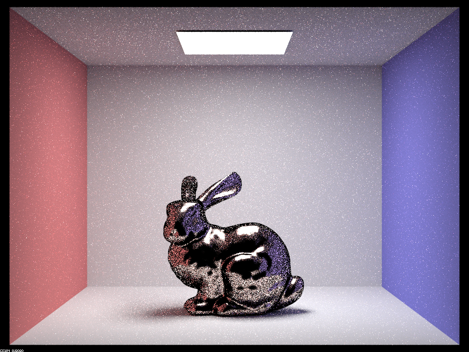
|
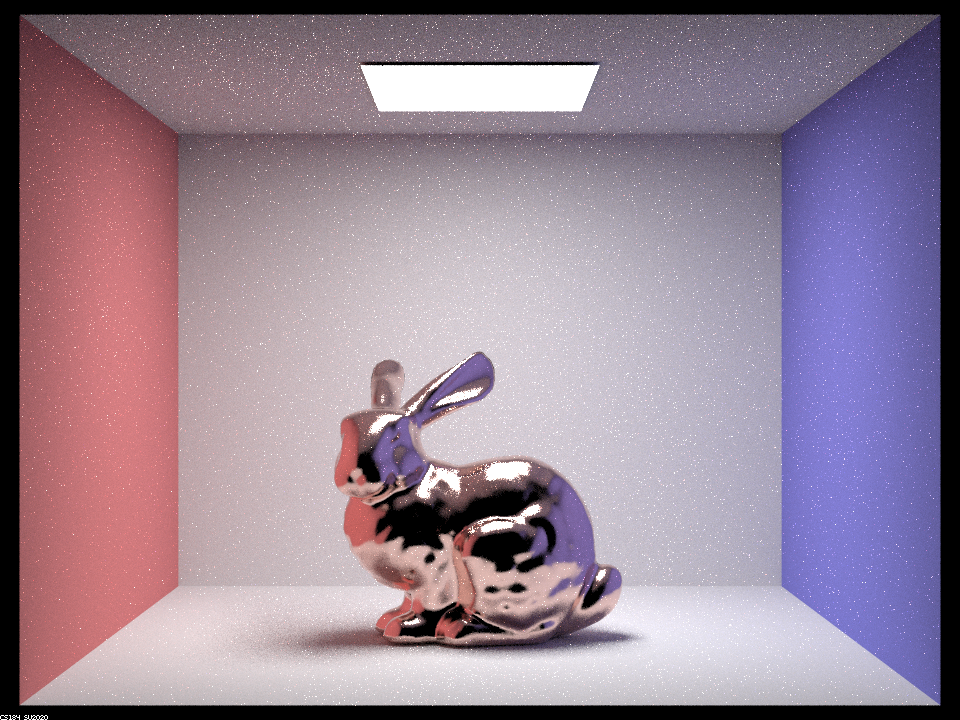
|
It's apparent that cosine hemisphere sampling produces considerably more noise on the material's surface in comparison to importance sampling. This is because the microfacets of the material are assumed to be perfectly specular, meaning they only reflect $\omega_i$ to $\omega_o$ if their half vector is close to the surface normal. Importance sampling weights the probability distribution of rays to satisfy this property, while the more naive cosine weighted hemisphere sampling does not. This makes it more likely to sample rays that don't form a mirrored angle on the surface (in mathematical turns, that result in a low $D(h)$), producing little to no reflectance.
Show at least one image with some other conductor material, replacingetaandk. Note that you should look up values for real data rather than modifying them arbitrarily. Tell us what kind of material your parameters correspond to.
We rendered CBdragon_microfacet_au.dae with three additional conductor materials. $\eta$ and
$k$ values were sampled from this refractive index database
over red (649 nm), green (549 nm), and blue (466 nm) wavelengths, whereas $\alpha$ were selected by us to
best demonstrate the material's natural appearance.
$$
\begin{aligned}
&1. \text{ Carbon:}
&\alpha &= 0.5, &\eta &= (2.4124, 2.4228, 2.4346), &k &= (0, 0, 0) \\
&2. \text{ Titanium Nitride:}
&\alpha &= 0.25, &\eta &= (1.3143, 1.2514, 1.3955), &k &= (2.6405, 2.0954, 1.4292)\\
&3. \text{ Osmium: }
&\alpha &= 0.1, &\eta &= (3.3180, 4.1345, 4.1300), &k &= (2.7970, 3.0645, 4.2100)
\end{aligned}
$$
|
|
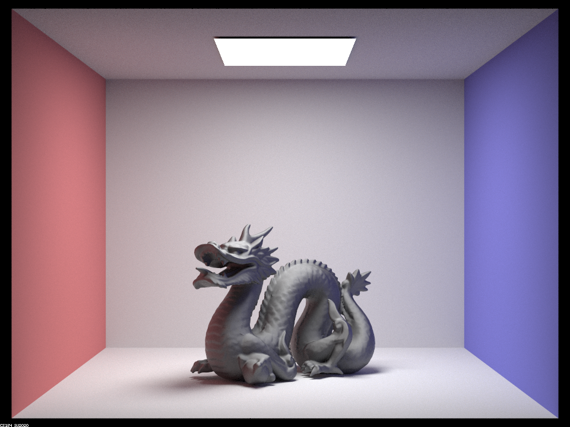
|
|
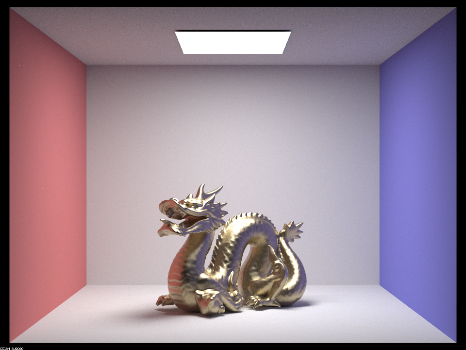
|
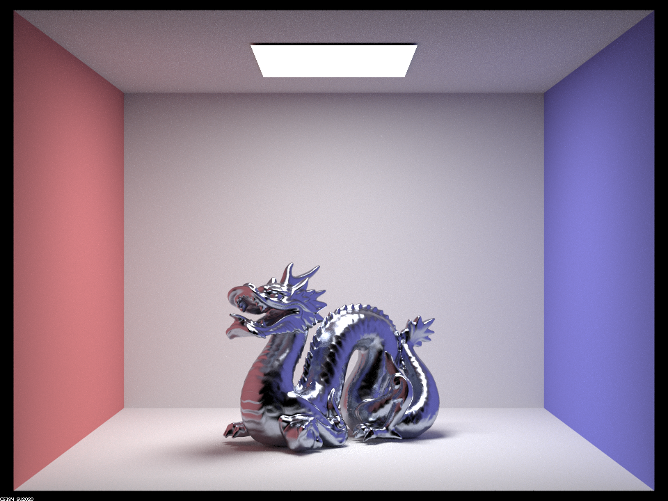
|
In addition to each of the materials exhibiting different levels of glossiness due to the varying $\alpha$, they also assume different colors due to selectively absorbing and reflecting different wavelengths and thus colors of light.
Summary of our Implementation

src/pathtracer/camera_lens.cpp's
Camera::generate_ray_for_thin_lens method by taking inspiration from Project 3-1.1.1:
we started out by finding the bounds of the screen
which we did by utilizing the horizontal and vertical field of view aspect ratio
which are stored as a member double variable in the Camera, which we then converted to
radians.
We then use the modified formulas from what was detailed in the 3-1 spec to construct the following vector:
$((2x-1)\tan(\frac{\text{hFov}}{2}), \ (2y-1)\tan(\frac{\text{vFov}}{2}), \ -1)$
which we can then multiply by the focal distance since that is the $z$ value, which we then offset by the point of focus, which is sampled uniformly on the disk of the thin lens:
$$\text { pLens }
= (\text { lensRadius } \sqrt{r n d R} \cdot \cos (\text { rndTheta }),
\text { lensRadius } \sqrt{r n d R} \cdot \sin (\text { rndTheta }),
0)$$
which we then normalize to get the blue vector's direction,
as that will be the second parameter to the constructor of the Ray instance that we return.
The constructred ray also has an origin at the camera position offsetted by pLens in the world coordinates,
and is what we return, after setting the min_t and max_t fields.
Why our Images look the way they do
Our images generated by the thin lens camera model look the way they do because of the way the rays are generated -- the lens refracts light rays that come from the item to the sensor. And the image will be in focus, if all the rays from the item to the sensor converge at the same point on the sensor. This means that if the light rays converge at a point that is a closer focal distance, then the image will not be in focus. This also means that if the light rays converge at a point that is a farther focal distance, then the image will not be in focus, with how close the focal distance is to the sensor determining how in-focus the image will be.
For these subparts, we recommend using a microfacet BSDF scene to show off the cool out of focus effects you can get with depth of field!
- In a few sentences, explain the differences between a pinhole camera model and a thin-lens camera model.
The pinhole camera model assumes that light travels through a single point (the pinhole) and forms an inverted image on the opposite side of the pinhole. This can be seen as a simplified version of the thin-lens camera model with aperture size going to 0 -- this means there is no lens, and thus no refraction. But on the other hand, the thin-lens camera model assumes that light travels through a thin lens and is refracted to form an inverted image on the opposite side of the lens. This makes the main difference between the two models being the way they represent the process of light passing through the camera to form an image.
The following were generated via the following command:
- Show a "focus stack" where you focus at 4 visibly different depths through a scene. Make sure to include all screenshots.
"./pathtracer -t 8 -s 512 -a 64 0.05 -r 640 480 -m 12 -l 4 -b 0.23 -d ${d} ../dae/sky/CBdragon_microfacet_au.dae"
|
|

|
|
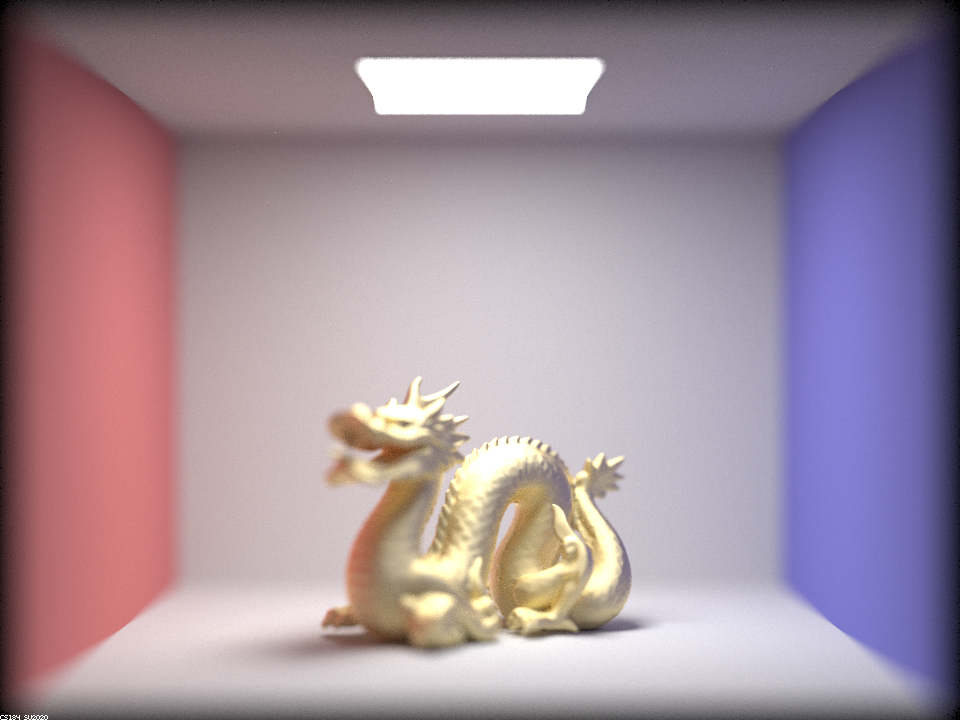
|
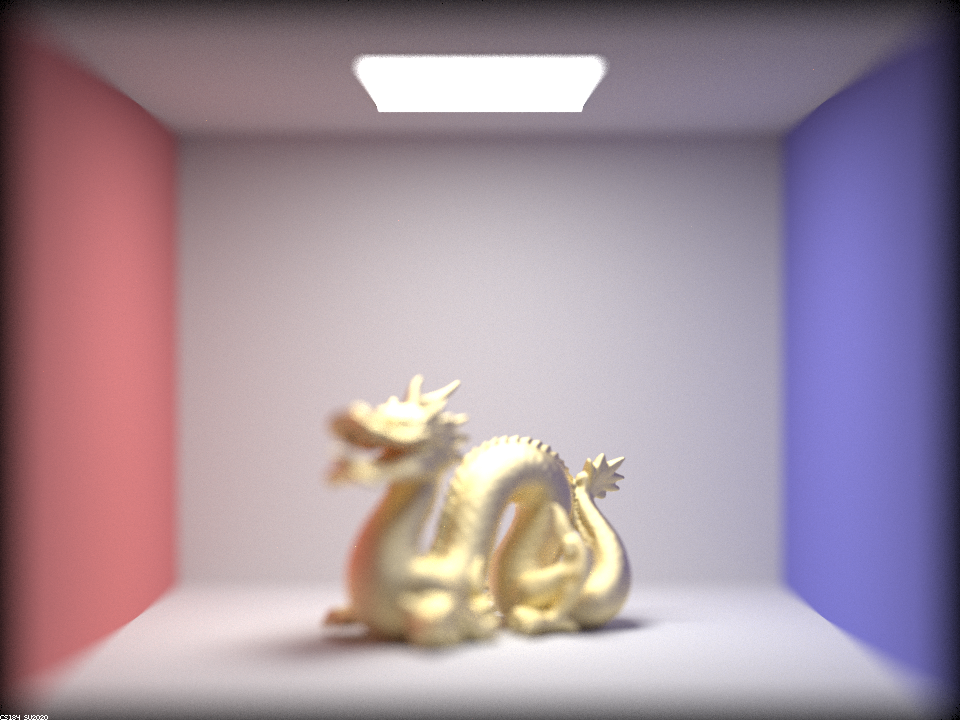
|
Above we see the effect on renders as we use different $d$ values -- which sets the focal distance.
In the above 4 images, we can see that the dragon's head is in focus when $d = 4.5$ and $d = 4.7$, but is out of focus when $d = 4.9$ and $d = 5.1$. For $d = 4.5$, the dragon's head is in focus because the focal distance is closer to the dragon's head than the focal distance is to the dragon's tail. For $d = 4.7$, the dragon's head is in focus because the focal distance is closer to the dragon's head than the focal distance is to the dragon's tail. For $d = 4.9$, the focus is instead on the dragon's body and tail because the focal distance is closer to the dragon's body and tail. For $d = 5.1$, the focus is instead on the dragon's tail because the focal distance is closer to the dragon's tail.
The following were generated via the following command:
- Show a sequence of 4 pictures with visibly different aperture sizes, all focused at the same point in a scene. Make sure to include all screenshots.
"./pathtracer -t 8 -s 512 -a 64 0.05 -r 480 360 -m 12 -l 4 -b ${b} -d 4.5 ../dae/sky/CBdragon_microfacet_au.dae"
|
|
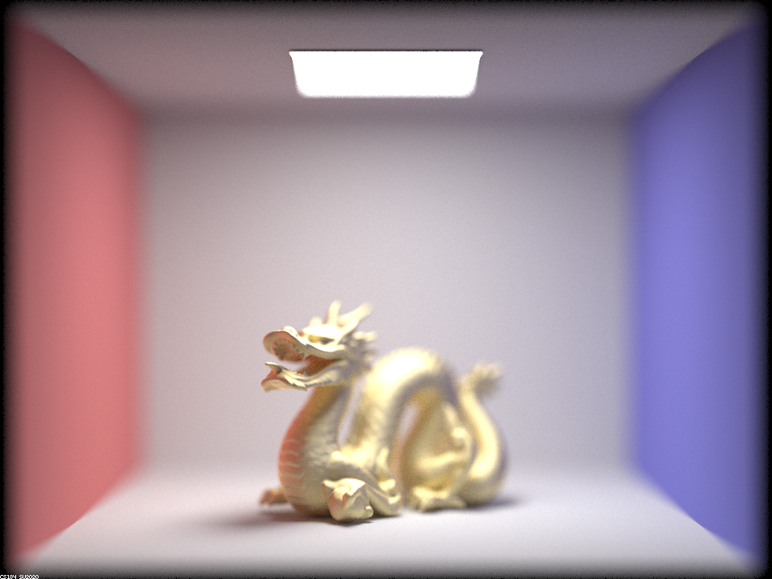
|
|
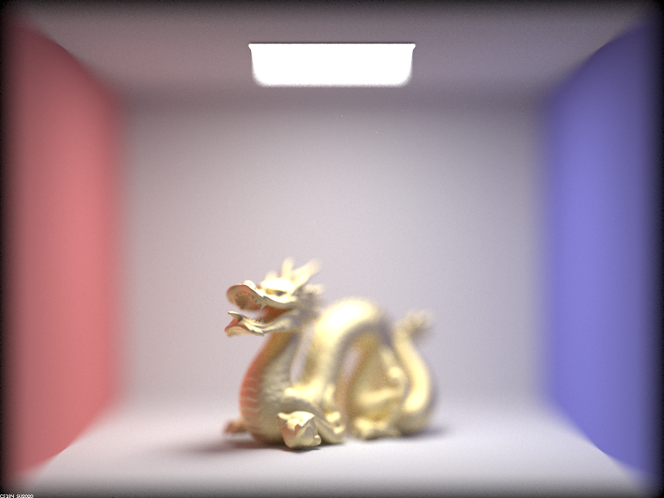
|
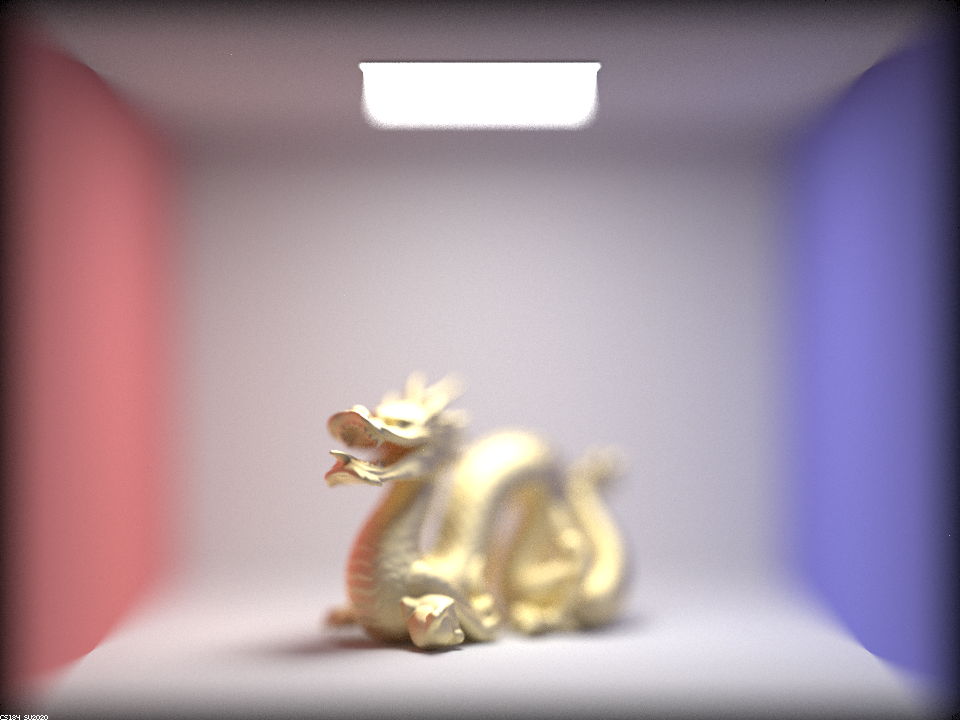
|
Above we see the effect on renders as we use different $b$ values -- which sets the lens radius.
The smaller our aperture is, the less light is let into the camera lens. As a result, the smaller our aperture is, the less blurry our image will be, as less light will be let into the camera lens and therefore the light that is let into the camera lens will be more focused and coming from the same general direction. Conversely, when we use a larger aperture, more light is let into the camera lens which covers a larger area of the lens, which as seen with the bottom right image above (compared to the top left image above) leads to more blurry images -- less of the image can now be in focus as $b$ increases from 0 to 1. This makes sense as items that are not on the focus plane become more blurry, which we see as $b$ increases. This is why we see the dragon's head, the dragon's right paw, and the dragon's tail in focus in the top left image above, but not as much so in the bottom right image above.
Calvin and Rahul contributed equally to this project. Calvin worked on part 2, Rahul worked on part 4, and we both reviewed the writeup together after. We collaborated on the project by meeting up after lecture everyday and working on the project together. We also communicated through Discord and worked asynchronously on tasks as needed to meet self-imposed deadlines. We were able to do this with the help of VSCode's Live Share extension, which allowed us to work on the same codebase at the same time, despite being in different locations. Overall, we had a great experience working together and we learned a lot about how to work together on a project. Specifically, we learned how to divide up tasks and work on them asynchronously, how to communicate effectively, and how to reference the spec (especially for equations in algorithms such as Fresnel Terms for Importance Sampling) and ask specific questions in Office Hours (where we coordinated at least one of us attending, for every OH since the project came out) and EdStem to get another look at bugs.